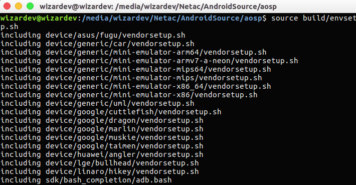
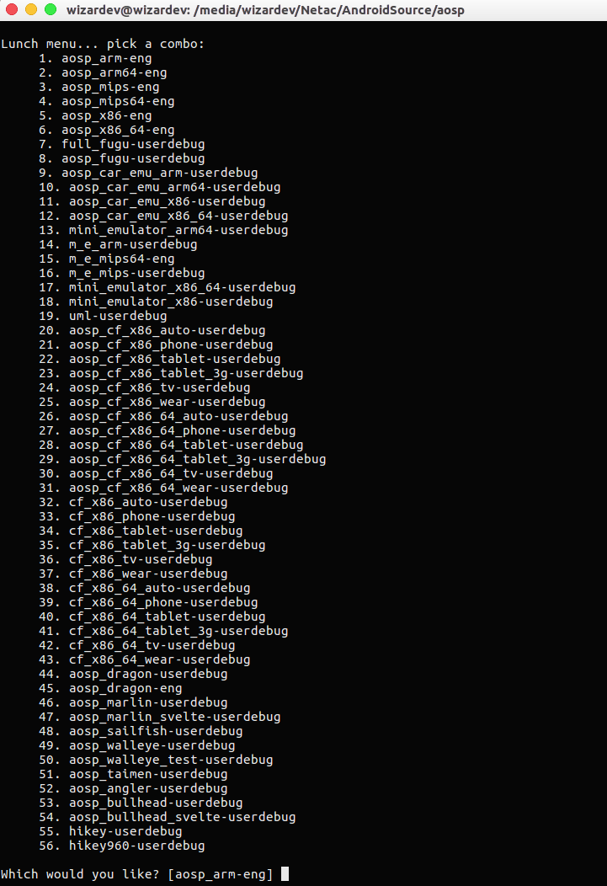
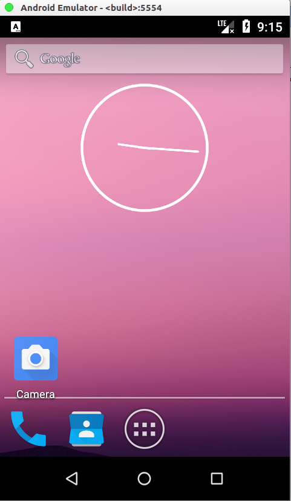

记一次编译Android源码
前言：已经是第二次编译Android源码了，由于距离第一次编译Android源码的时间较长，所以有一些编译源码的命令以及编译的时候遇到问题的解决方法都忘记了，需要重新查找相关资料，这样就显得有些事倍功半了，故写下这篇文章记录编译Android源码的方式以及编译的时候遇到的问题。
编译前的准备
  工欲善其事，必先利其器。在编译源码前需要进行一些相关环境的配置，有以下几点需要准备
- 电脑需要安装Linux系统（不推荐虚拟机）
- 配置Java环境
- 已经安装过Git
- 安装编译源码需要的依赖
我编译源码的时候用的是Ubuntu16.04的系统，关于Ubuntu16.04的安装以及Java环境的配置大家可以自己搜索，这里就介绍一下编译源码时需要的依赖的安装方法，可以通过以下命令进行安装
1 | sudo apt-get install libx11-dev:i386 libreadline6-dev:i386 libgl1-mesa-dev g++-multilib |
同步源代码
  这里推荐清华大学开源软件镜像站进行源码的同步，下载速度真的很快，清华大学开源软件镜像站提供了两种同步源码的方式，我采用的是第一种，好像这种同步下来的源码都是最新的Android源码，第一种同步源码的方式如下
下载安装repo工具
1 | mkdir ~/bin |
同步源代码
1 | wget -c https://mirrors.tuna.tsinghua.edu.cn/aosp-monthly/aosp-latest.tar # 下载初始化包 |
注：这里在执行repo sync的时候可能会出现下面的错误
1 | error: .repo/manifests/: contains uncommitted changes |
这时我们在搜索引擎搜索这个错误，出来的答案大都如下
先 cd .repo/manifests
再执行 Git stash 和 git clean -f -d
然后再repo sync 就可以通过了
但是，这答案对我并没用，历经千辛万苦最后终于找到了解决这个错误的办法，执行以下命令
1 | git config core.filemode false |
然后在执行 repo sync便能同步成功。可能在同步的过程中会遇到下面的错误
1 | error:Exited sync due to fetch errors |
解决办法就是再执行一次repo sync或 repo sync -f 命令。
编译源码
  进入解压后的aosp文件夹,执行下面的命令
1 | source build/envsetup.sh |
下面是执行命令后的结果
可以看出这个命令是将一些脚本文件包含进来，接着执行一下命令
1 | lunch |
执行后的结果如下
这时我们只要输入相应的序号，就可以指定编译目标的格式了，如此时输入序号‘1’，则编译的目标格式为aosp_arm-eng,所谓的编译目标就是生成的镜像要运行在什么样的设备上。下面介绍一下编译目标格式，编译的目标格式都是BUILD-BUILDTYPE形式，BUILD就是
BUILD指的是特定功能的组合的特定名称,即表示编译出的镜像可以运行在什么环境.其中,aosp(Android Open Source Project)代表Android开源项目;arm表示系统是运行在arm架构的处理器上,arm64则是指64位arm架构;处理器,x86则表示x86架构的处理器;
BUILDTYPE就是
BUILD TYPE则指的是编译类型,通常有三种:
-user:代表这是编译出的系统镜像是可以用来正式发布到市场的版本,其权限是被限制的(如,没有root权限,不鞥年dedug等)
-userdebug:在user版本的基础上开放了root权限和debug权限.
-eng:代表engineer,也就是所谓的开发工程师的版本,拥有最大的权限(root等),此外还附带了许多debug工具
了解了编译目标格式，我们根据自己的需要输入相应的序号即可。如果你是准备编译源码后在电脑上运行，那么推荐选择序号“5”进行编译，因为这样在运行时速度会快很多。
开始编译
  输入下面的命令则编译开始
1 | make -j8 |
注：这里的**-j8*代表的时启用编译的线程数，参与编译的线程并不是越多越好,通常是根据你机器cup的核心来确定:core2,即当前cpu的核心的2倍.比如,我现在的笔记本是双核四线程的,因此根据公式,最快速的编译可以make -j8(通过cat /proc/cpuinfo查看相关cpu信息)。
如果编译的过程中没有出现什么错误，那么在几个小时后你应该会看见下面的输出
1 | make completed successfully |
那么恭喜你完成了Android的源码编译。
运行模拟器
  如果你是在编译完后立刻运行模拟器，可以通过以下命令来运行模
1 | emulator |
否则，通过以下命令来运行
1 | source build/envsetup.sh |
下面看下，我此次编译后运行的模拟器
结束语
  编译源码的时候还是有一些坑的，本文的目的就是让大家在编译源码时少入坑，节省时间做更有意义的事情。至此，已经成功编译了Android源码，有了Android的源码，你就可以更深入的研究Android了。